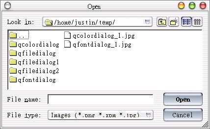
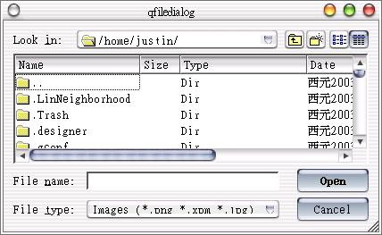

在視窗程式中開啟檔案或另存檔案的動作，會使用檔案話方塊來讓使用者方便的選取或決定檔案名稱，在Qt中，這則是由QFileDialog類別負責，在這邊我們將示範一些簡單的使用方式。
QFileDialog最簡單的使用方法就是利用它所提供的靜態方法，例如下面這個程式會顯示一個開啟檔案的對話方塊，選取檔案會使用QMessageBox顯示所選取的檔案路徑與名稱：
#include <qapplication.h>
#include <qfiledialog.h>
#include <qmessagebox.h>
int main(int argc, char** argv) {
QApplication app(argc, argv);
QString s = QFileDialog::getOpenFileName(
"/home", "Images (*.png *.xpm *.jpg)",
0, "open file dialog Choose a file" );
if(s != NULL)
QMessageBox::information(0, "Get Selected File",
s, "OK", "", "", 0, 1);
return 0;
}
getOpenFileName()方法會顯示一個檔案開啟的對話方塊，如果要顯示儲存檔案的對話方塊，就使用getSaveFileName()方法，
在參數的指定上，"/home"指定開啟時的工作目錄，而"Images (*.png *.xpm
*.jpg)"指定開啟檔案時的副檔名過濾，如果還要使用其它的過濾方式，可以使用分號，如下所示：
"Images (*.png *.xpm *.jpg);;Text files (*.txt);;XML files (*.xml)"
下圖與Qt的檔案對話方塊執行畫面：

我們也可以新增物件的方式來使用QFileDialog類別，這可以讓我們設定更多的選項，下面這個程式示範一些常用的方法：
#include <qapplication.h>
#include <qfiledialog.h>
#include <qmessagebox.h>
int main(int argc, char **argv) {
QApplication app(argc, argv);
QFileDialog* fd = new QFileDialog(0, "file dialog", TRUE);
fd->setDir("~/"); // 工作目錄
fd->setShowHiddenFiles(true); // 顯示隱藏檔案
fd->setMode(QFileDialog::ExistingFile); // 顯示目前存在的檔案
fd->setFilter("Images (*.png *.xpm *.jpg)"); // 副檔名過濾
fd->setViewMode(QFileDialog::Detail); // 顯示詳細資訊
QString fileName;
if (fd->exec() == QDialog::Accepted) {
fileName = fd->selectedFile();
QMessageBox::information(0, "Get Selected File",
fileName, "OK", "", "", 0, 1);
}
return 0;
}
以上的方法都使用註解說明了它們各自的作用；在setMode()方法中，如果是開啟舊檔，我們可以使用ExistingFile以顯示目前存在的檔案，
如果設定為AnyFile，表示使用者可以選擇任何的檔案，即使檔名不存在，而這是在儲存對話方塊時使用的，例如另存新檔。
下圖為程式執行時的一個畫面：

另外，在使用檔案對話方塊時，有時我們可以允許使用者一次選擇多個檔案同時開啟，這時可以使用靜態的
getOpenFileNames()方法，或是在物件所使用的selectedFiles()方法，而它們會傳回QStringList物件，當中包含
所選擇的多個檔名資訊，我們可以如下取出所選擇的多個檔案名稱：
#include <qapplication.h>
#include <qfiledialog.h>
#include <qmessagebox.h>
#include <qstringlist.h>
int main(int argc, char** argv) {
QApplication app(argc, argv);
QStringList list = QFileDialog::getOpenFileNames(
"Images (*.png *.xpm *.jpg)","/home",
0, "open file dialog Choose a file" );
QStringList::Iterator it = list.begin();
while( it != list.end() ) {
QMessageBox::information(0, "Get Selected File",
*it, "OK", "", "", 0, 1);
++it;
}
return 0;
}
在以上我們都使用QMessageBox來顯示所選擇的檔名，真正應用時當然就將之置換為您取得檔名後所要進行的處理，例如檔案的開啟等等。
|
|